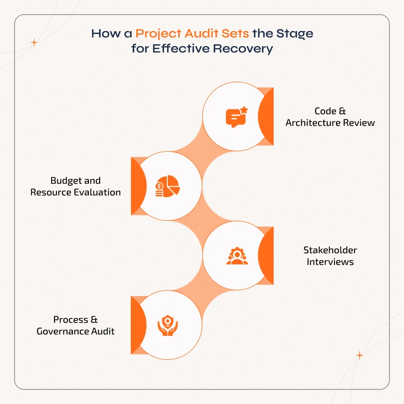
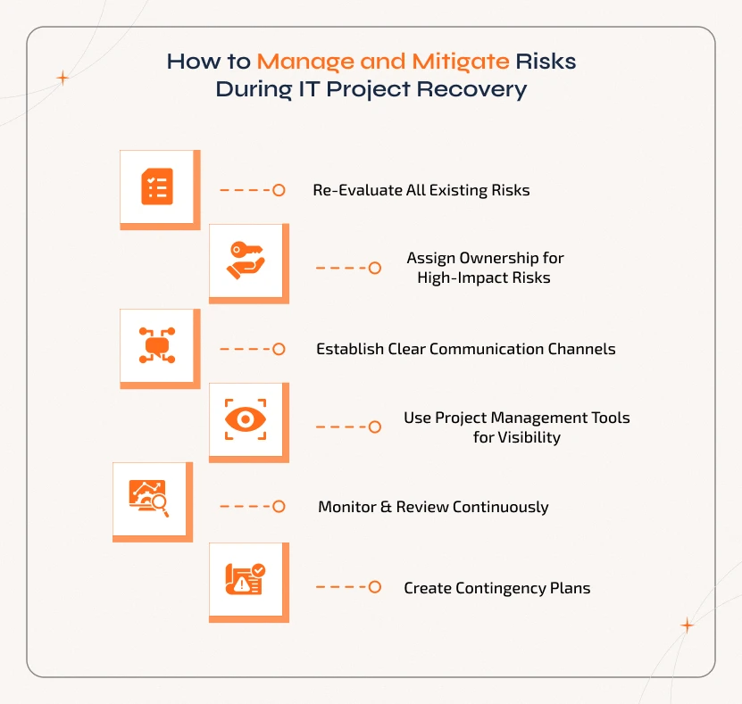
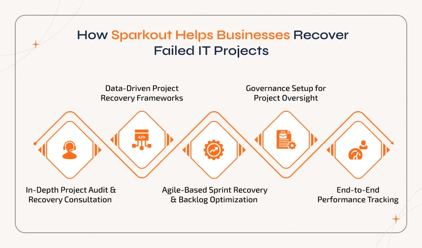

Almost every other business owner is very well aware of the time, effort, and money that goes into an IT project. Even the most well-planned IT initiatives can sometimes get into unexpected setbacks. The reason for a failed IT project may be due to tight deadlines, budget overruns, unclear requirements, or shifting priorities. But the failed software project doesn't mean the end, it marks a chance to rebuild stronger. i.e., the key lies in knowing how to recover a failed IT project effectively by finding the root cause, rebuilding trust, and putting the right structure back in place.
Here in this blog, we will break down the main reasons IT projects fail and share a step-by-step project recovery framework that helps business leaders transform troubled projects into success stories.
Early Warning Signs Your IT Project Might Be in Trouble
An IT or software project development may fail at times, and this section covers the early warning signs to consider checking before they collapse. The biggest challenge is to recognize them early to act and fix them. For business owners, catching these signals can mean the difference between a short delay and a costly failure.
Check out the 14 red flags that suggest your IT project may be in trouble:
1. Frequent Scope Changes
When new requirements are being
added or deliverables keep changing during development, it is a sign that shows your
project lacks clear direction and control.
2. Unclear Project Objectives
If your team fails to clearly
define what success looks like, then they are likely building the wrong thing or
working on too many things at once.
3. Missed Milestones
Slipping deadline points consistently
means poor planning, resource overload, and unrealistic expectations.
4. Budget Overruns
The exceeding costs faster than progress
often indicate inefficiencies, frequent scope changes, and weak financial oversight.
5. Poor Communication Flow
When the updates are unclear and
inconsistent, misunderstandings occur, which in turn lead to rework, frustration,
and finger-pointing issues.
6. Low Team Morale
Over time, when the motivation drops,
productivity decreases. The reasons for low team morale include burnout, unclear
priorities, and constant changes.
7. Weak Leadership
A lack of decisive leadership makes
teams uncertain about the priorities and accountability. This further stops the
project from progressing.
8. Undefined Roles & Responsibilities
Without a clear
knowledge of who owns what, there is a high chance for the tasks being duplicated or
ignored. This, in turn, slows down the entire project.
9. Lack of Stakeholder Engagement
When the sponsors or
clients are disengaged, feedback comes too late, and critical decisions get delayed.
10. Ignored Risks or Warnings
Upon ignoring early
technical or operational risks, you will need to face major problems with your
project at any time later.
11. Declining Quality Standards
During testing, if you
happen to see repeated bugs or issues that are patched instead of fixed, then it
signals rushed work and a lack of quality control.
12. Misalignment with Business Goals
When the project no
longer aligns with your core business strategy, even the perfect execution can
deliver poor ROI.
13. Lack of Transparency in Reporting
When the metrics are
unclear or progress reports show only the good part, then it usually means bigger
problems are being hidden.
14. Growing Stakeholder Frustration
Complaints,
disengagement, or a loss of trust from key stakeholders implies that expectations
are not being met.
Upon identifying all these red flags at an early stage, business owners can step in before the project collapses. Thus, you can realign your team, restore trust, and recover the failing IT project with confidence.
Spot the Signs Early & Act Before It's Too Late
Find the red flags early before complete failure and apply an actionable IT project recovery plan to get back on track.
The Strategic Importance of Project Recovery in IT Projects
For a business owner, project recovery is not only about how fast a delayed or struggling project is finished. Rather, it is about regaining control, rebuilding confidence, and restoring business value. When it is done right, project recovery turns roadblocks into learning opportunities and strengthens your organization's ability to deliver consistently.
A well-structured project recovery framework helps your business to:
1. Minimize Financial Losses & Resource Wastage
Early
recovery of a project prevents unwanted expenses and resource utilization. Instead
of scrapping, a recovery plan helps you reuse existing work efficiently. This
eventually saves both time and software development cost.
2. Realign Objectives with Business Goals
Recovery brings
back the focus to what truly matters for your core business outcomes. It ensures the
custom software project delivers measurable value and not just technical completion.
3. Strengthen Governance & Communication
A recovery process
helps build transparency and trust between teams, leaders, and stakeholders. When
the reports and ownership details are clear, then everyone gets the idea of where
the project stands and what is needed to move forward.
4. Establish a Repeatable Recovery Framework for Future Projects
After building a solid recovery approach, it becomes a part of
your project management culture. This proactive framework helps you find the risks
at an early stage, respond faster, and prevent similar issues from recurring.
Thus, project recovery builds resilience and accountability within your organization. This even turns challenges into lessons, helps teams to handle uncertainty, and ensures that every project, including those failing one, contributes to long-term success.
What Business Leaders Should Know About Recovering a Failed IT Project
Whenever an IT project begins to go off track, business owners often get confused about whether to continue, pause, or restart entirely. It is vital to act quickly and strategically to fix a broken software project. More often, understanding how to recover a failed IT project involves more than technical fixes. i.e., it demands strong leadership, transparent communication, and clear alignment with business goals.
The right expertise sets the direction for IT project recovery. Conducting a through assessment of what went wrong helps business owners make informed decisions and thus helps prevent setbacks.
A well-structured project recovery plan helps business owners with a roadmap to regain control. This includes auditing the current status, redefining success metrics, and applying project risk mitigation strategies to avoid similar failures in the future. With timely decisions and strong oversight, business leaders can turn setbacks into opportunities for process improvement and renewed project success.
How a Project Audit Sets the Stage for Effective Recovery
Every successful project recovery plan starts with a detailed project audit and recovery assessment. It is the phase that helps uncover where things went wrong, why it happened, and what can be done to fix broken software project. A clear and focused audit helps business leaders get to know the current project health. i.e., what are the issues, things that need rebuilding, and how to move forward efficiently.

Here is what a comprehensive project audit covers:
1. Code & Architecture Review
Here, the technical experts
audit the codebase, system architecture, and integrations to find out the issues. It
may range from technical errors to poor performance and outdated frameworks. This
ensures the foundation of your project is strong enough to support future
improvements.
2. Budget and Resource Evaluation
This step involves
reviewing how the project's budget, manpower, and time were allocated and spent. It
helps control the cost during recovery by finding the inefficiencies, overspending,
and underutilized resources.
3. Stakeholder Interviews
Communicating with the key team
members, clients, and decision-makers helps find out where communication gaps or
misaligned expectations exist. By gathering these insights, it is possible to
rebuild collaboration and restore trust.
4. Process & Governance Audit
This step is all about
reviewing project documentation, workflows, sprint planning, and approval processes.
The goal is to identify the procedural gaps, like missing reviews, weak sign-offs,
and poor change management.
Putting together all these steps forms the diagnostic foundation for your project recovery strategy. By identifying what has gone wrong, you can easily create a data-driven recovery plan without guesswork and put your project back on track.
Start with a Project Health Audit
Get a complete assessment of where your IT project stands for a quick reveal and get guide recovery.
Uncovering the Root Causes Behind IT Project Failures
Just before you start to fix a broken software project, it is vital to understand why it failed in the first place. Getting to know the root causes helps organizations take correct actions quickly and can prevent the same mistakes from happening again.

Here are some of the most common reasons IT projects fail:
1. Poor Requirement Definition & Change Management
It is
possible for the team to build the wrong features or miss critical functionality
when the project goals are not clearly defined at the very beginning. So, without a
proper change management process, even a small adjustment will exceed the budget and
timelines.
2. Lack of Proper Risk Management
There is a possibility
for every to project to face risks in any form, like technical, financial, or
operational. Often, ignoring them and failing to plan for them means you are
reacting to the problems instead of preventing them. So, effective IT project risk
management keeps the teams prepared for the unexpected.
3. Unrealistic Deadlines & Resource Planning
Very short
deadlines or limited resources add unnecessary pressure on the teams. This often
leads to burnout, missed milestones, and compromised quality. As a result, there is
a possibility for the software project to go off track.
4. Ineffective Leadership & Decision-Making Delays
Strong
leadership is required to drive better outcomes. So, if the decisions are delayed or
accountability is unclear, project progress takes time, and teams will eventually
lose confidence in the project scope.
5. Miscommunication Between Teams
When the communication
between the development, management, and stakeholders is poor, it naturally creates
misunderstanding about the project scope, progress, and priorities. Clear
communication ensures a better scope and reduced rework.
Lastly, documenting all these is as important as identifying them. This helps organizations and business owners build resilience, transparency, and smarter project management practices for future success.
How Business Owners Can Realign Project Goals & Objectives After Failure
As soon as the problems in the custom software development are identified, the next step for any business owner is to bring the project back on track with their business goals. This stage is all about redefining the outcomes and ensuring every task adds real value to the project.
1. Reassess Project Scope & Deliverables
Ensure the
project still aligns with the original business needs. It is vital to remove
unnecessary features or tasks that don't add value.
2. Adjust Deadlines to Realistic Timelines
You can set up
achievable milestones in order to balance the speed with project quality. This
supports teams to work efficiently without burnout.
3. Revisit Technology & Tools
It is better to evaluate the
tools, frameworks, and tech stacks used in the project. You can even upgrade to
newer, more efficient technologies can enhance performance and make future updates
easier.
4. Reallocate Resource Based on Priorities
It is vital to
shift the focus to those areas that need more attention, like budgets, tools, or
personnel.
5. Engage & Align Stakeholders
Discussing changes openly
with the clients and internal teams is essential. Address evolving expectations,
clarify dependencies, and ensure everyone agrees on the revised direction.
6. Redefine KPIs for Measurable Progress
By updating
performance metrics, it is possible to track recovery progress clearly with utmost
transparency.
7. Plan Milestones & Deliverables Clearly
It is good to
build a milestone-based plan with defined features and delivery dates. Issues can be
identified early by regular stand-ups and sprint reviews.
8. Manage Workload & Budget Wisely
You can avoid
overcommitting or overspending on incomplete tasks. It is possible to maintain
morale and prevent financial strain with proper workload planning.
9. Strengthen Governance & Communication
This involves
setting up consistent governance calls, reporting structures, and escalation
channels. It is possible for everyone to stay aligned and informed with transparent
updates.
10.Document Lessons for Future Projects
It is better to
record what caused the setbacks and how they were resolved. These lessons from
failed IT projects help prevent similar issues and build organizational maturity.
By revisiting the goals and expectations, you can restore clarity, focus, and control. This ensures the project moves forward with a clear direction and purpose.
How to Manage and Mitigate Risks During IT Project Recovery
It is obvious to take risks while developing an IT project. What matters the most is how you manage project failure in IT. During the recovery phase, you should focus more on identifying, prioritizing, and minimizing those risks before they affect the project's progress.

Here is how to strengthen your project's risk management strategy:
1. Re-Evaluate All Existing Risks
You should review the
old assumptions and uncover new threats that have appeared after the audit.
2. Assign Ownership for High-Impact Risks
It is good to
make one person accountable for tracking and addressing each major risk.
3. Establish Clear Communication Channels
You can ensure
your team knows when and how to escalate the issues before they grow into bigger
problems.
4. Use Project Management Tools for Visibility
Using
platforms like Jira or Asana will help your team monitor the risks in real-time. You
can even take action quickly to resolve the same.
5. Monitor & Review Continuously
You can even revisit your
risk log regularly to find out any emerging issues at an early stage.
6. Create Contingency Plans
It is essential to prepare a
backup plan and strategies to handle critical risks. This way, your team can
effortlessly respond without losing momentum.
By building robust IT project risk management practices into your recovery plan, you can eventually prevent future failures, improve decision-making, and create a culture of proactive problem-solving.
How to Build a Strong Project Recovery Plan That Gets Results
A clear, well-structured recovery plan is the foundation to turn a struggling project successful. It offers clarity, restores direction, and ensures every team member knows what needs to be done next. Without a structured plan, recovery efforts can lose focus and bring in the same mistakes.

Here is what to include when building your project recovery plan:
1. Recovery Leadership
It is better to appoint a dedicated recovery or turnaround manager to proceed with the process. This person will be in charge of decision-making, coordinating teams, and ensuring the recovery actions happen as per the schedule.
2. Prioritizing Backlog
By reviewing all pending tasks, it is possible to focus on those that need the most value to the business. Working on high-impact deliverables will help rebuild trust and confidence among the stakeholders.
3. Revised Milestone
You shall update the timelines and success checkpoints based on the project's current reality. By setting up achievable milestones, it is possible to help teams measure progress without pressure.
4. Communication Strategy
It is better to keep everyone informed, from internal teams to external stakeholders. By regularly updating the progress, changes, and challenges, it is easy to maintain transparency and trust throughout the recovery journey.
5. Performance Metrics
Defining clear metrics helps measure weekly improvements in delivery speed, code quality, and customer satisfaction. You will get an idea whether the recovery plan is working well or needs adjustments by tracking these results.
A well-defined recovery plan is essential to stay focused, organized, and transparent. This offers clarity and a better path for your team to complete the software development project successfully.
Want to Build a Recovery Plan That Works?
Start planning smarter and execute with confidence.
From Recovery to Growth - Ensuring Long-Term Success and Continuous Improvement
Project recovery is not just putting things back under control. It is all about making sure the same issues don't happen again. For this organization should follow a long-term improvement and ongoing learning. Whether it’s a large enterprise system or an e-commerce website project recovery, continuous improvement strengthens the processes, boosts efficiency, and maintains the project's success over time.
Things to be followed to ensure lasting results after recovery:
1. Conduct Periodic Post-Recovery Audits
By conducting regular reviews, you can easily evaluate whether the fixes implemented are effective and find out new challenges that might have appeared over time.
2. Document Best Practices for Internal Knowledge Sharing
It is vital to record lessons learned, recovery steps, and successful strategies. Sharing this information across the teams helps prevent the same similar issues from happening again in future projects.
3. Use Analytics for Performance Tracking & Optimization
By monitoring data on productivity, timelines, and costs, it is easy to identify the trends and areas where the performance needs to be further improved.
4. Apply Recovery Insights to Strengthen Project Management Frameworks
You can integrate what you have learned from this recovery into your standard project management practices to make future projects more resilient and predictable.
Thus, by turning the project recovery into a continuous learning process, you can enable your organization to change setbacks into valuable insights. This, in turn, helps create a stronger foundation for long-term success and competitive advantage.
How Sparkout Helps Businesses Recover Failed IT Projects
At Sparkout, we help businesses get back their control over failed IT projects and turn them into reliable, high-performing systems. Our team uses deep technical expertise with a structured recovery approach to align your project with your core business objectives.

Our proven IT project management recovery process involves:
1. In-Depth Project Audit & Recovery Consultation
We start with assessing your project's current state. This includes code quality to resource utilization, and process gaps to find out the real causes of failure.
2. Data-Driven Project Recovery Frameworks
We design a customized recovery strategy based on the findings to align it with your business goals, KPIs, and delivery timelines.
3. Agile-Based Sprint Recovery & Backlog Optimization
Our team will restructure the sprints and prioritize high-value tasks to speed up the progress while ensuring the quality.
4. Governance Setup for Project Oversight
We follow clear governance practices and reporting structures to ensure transparency, accountability, and control throughout the recovery journey.
5. End-to-End Performance Tracking
With the help of analytics and performance dashboards, we monitor every phase of the project to ensure measurable improvements and sustainable success.
At Sparkout, we not only recover struggling projects but also rebuild them to be scalable, robust, and future-ready.
Why Choose Sparkout As your IT Project Recovery Partner?
Choosing the right partner helps you decide if your project is just temporarily fixed or truly successful. At Sparkout, we use the experience, innovation, and structure that are required to recover and rebuild custom software development projects successfully.
For the following reasons, businesses trust us for their project recovery needs:
- Our team has years of experience in rescuing complex, large-scale IT projects across industries. Thus, we ensure every recovery is strategic and sustainable.
- We ensure open and real-time communication in every phase of recovery. Thus, you always know the status of your project.
- Our structured approach helps you find, track, and remove the risks at an early stage. This, in turn, prevents future project delays and exceeding the budget.
- From developers to QA engineers, project managers, and business analysts, we ensure to work together to relaunch the project effectively.
- We focus on results that you can see with improved timelines, reduced software development costs, and better performance outcomes
Ready to Recover your IT Project?
Our experts can help you regain control, reduce losses & deliver results faster.
Conclusion
Every failed IT project, when handled with the right strategy and mindset, can be turned into a successful project that brings measurable outcomes. A structured project recovery framework helps you find what went wrong, rebuild confidence, and realign with your business goals.